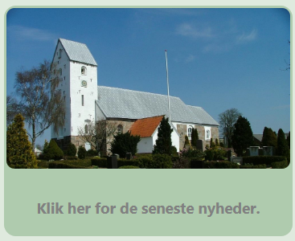
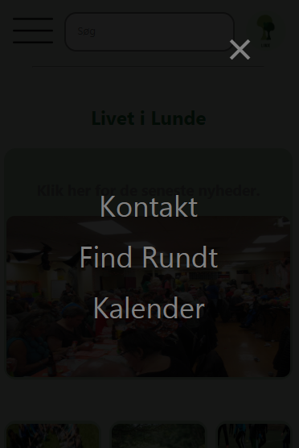

Slideshow

CSS
.mySlides {display:none
}
.w3-left, .w3-right, .w3-badge {
cursor:pointer;
display: inline;
}
.w3-left {
z-index: 1;
position: relative;
top: -150px;
}
.w3-right {
z-index: 1;
position: relative;
float: right;
top: -150px;
}
.w3-badge {
height:13px;width:13px;padding:0
}
.mySlides {
border-radius: 10px;
}
.border {
border: solid;
border-color: rgb(175, 203, 174, 0.4);
border-radius: 15px;
}
Javascript
var myIndex = 0;carousel();
function carousel() {
var i;
var x = document.getElementsByClassName("mySlides");
for (i = 0; i < x.length; i++) {
x[i].style.display = "none";
}
myIndex++;
if (myIndex > x.length) {myIndex = 1}
x[myIndex-1].style.display = "block";
setTimeout(carousel, 2000); // Change image every 2 seconds
}
Overlay Menu

CSS
.overlay {
height: 100%;
width: 0;
position: fixed;
z-index: 1;
left: 0;
top: 0;
background-color: rgb(0,0,0);
background-color: rgba(0,0,0, 0.9);
overflow-x: hidden;
transition: 0.5s;
}
.overlay-content {
position: relative;
top: 25%;
width: 100%;
text-align: center;
margin-top: 30px;
}
.overlay a {
padding: 8px;
text-decoration: none;
font-size: 36px;
color: #818181;
display: block;
transition: 0.3s;
}
.overlay a:hover, .overlay a:focus {
color: #f1f1f1;
}
.overlay .closebtn {
position: absolute;
top: 20px;
right: 45px;
font-size: 60px;
}
@media screen and (max-height: 450px) {
.overlay a {font-size: 20px}
.overlay .closebtn {
font-size: 40px;
top: 15px;
right: 35px;
}
}
Javascript
function openNav() {
document.getElementById("myNav").style.width = "100%";
}
function closeNav() {
document.getElementById("myNav").style.width = "0%";
}